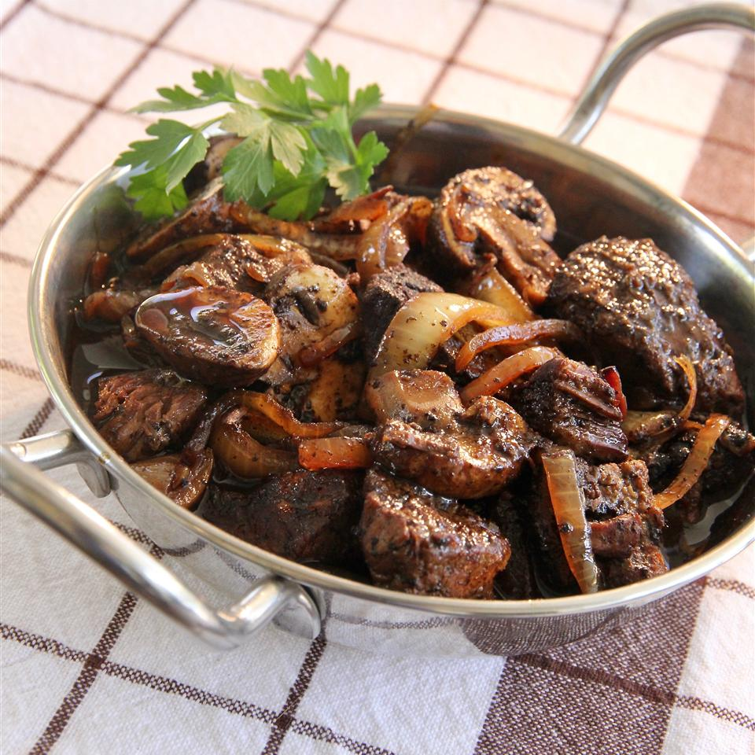

Boeuf Bourguignon

Description
How to make Boeuf Bourguignon
Ingredients
- ¼ cup vegetable oil
- 5 onions, sliced
- 2 pounds lean beef, cut into 1-inch cubes
- 1 ½ tablespoons all-purpose flour
- ¼ teaspoon dried marjoram
- ¼ teaspoon dried thyme
- freshly ground black pepper to taste
- 1 cup dry red wine
- ½ cup beef broth
- 1 (8 ounce) package sliced fresh mushrooms
Steps
- Heat oil in a large, heavy skillet over medium heat.
Add onions; cook and stir until tender, about 10 minutes. Transfer to a bowl.
- Cook and stir beef in the same skillet until browned, 1 to 2 minutes per side.
Sprinkle flour, marjoram, thyme, and pepper over beef. Pour red wine and beef broth into the skillet; stir well. Reduce heat to low and simmer until beef is tender, 1 1/2 to 2 hours.
- Stir onions into the skillet. Add mushrooms.
Cook, stirring, until mushrooms are tender and sauce is thick and dark brown, about 30 minutes.